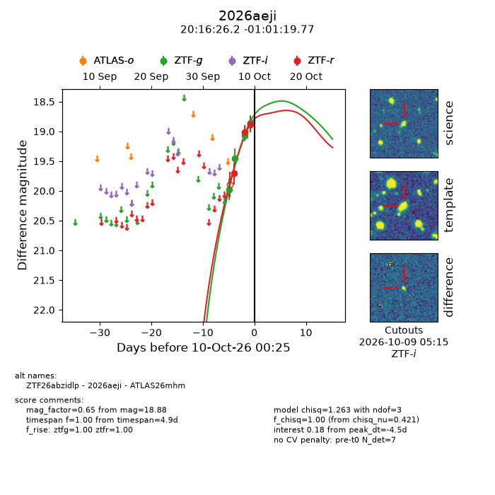
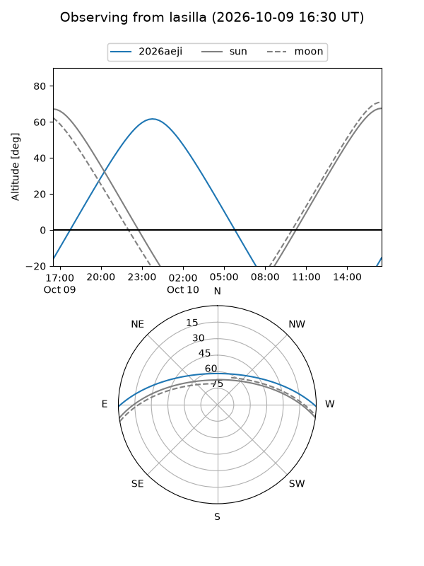
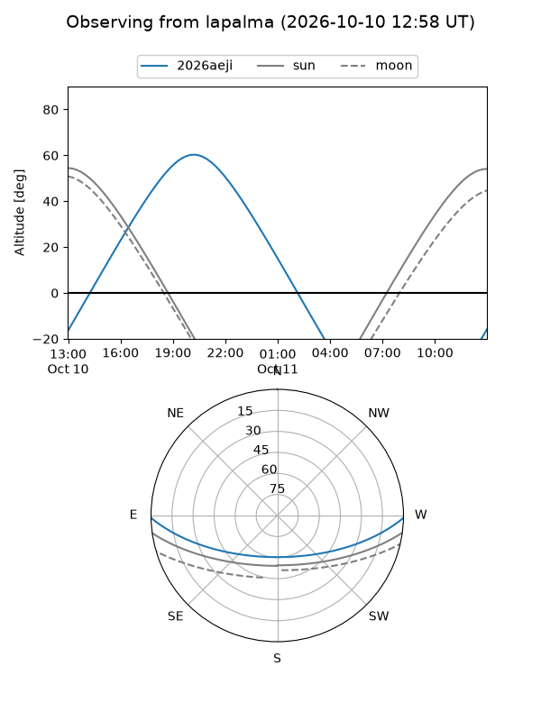
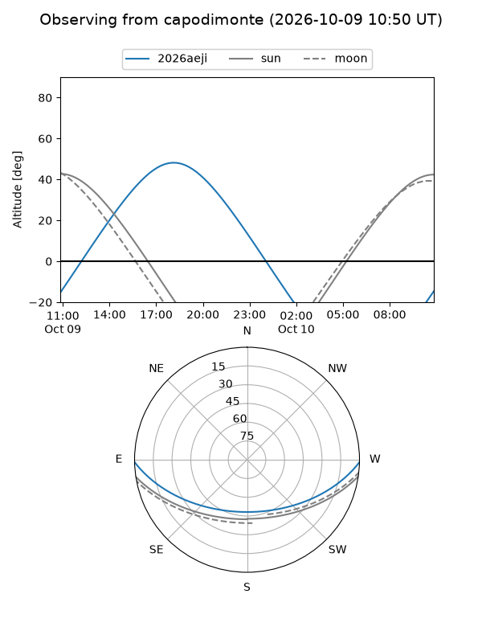
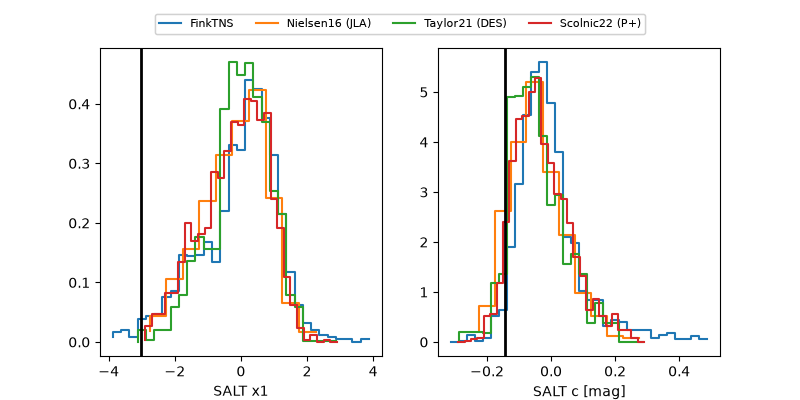

2026aeji
Target 2026aeji at 2026-10-10 00:26
Aliases and brokers:
FINK-ZTF: ztf.fink-portal.org/ZTF26abzidlp
Lasair-ZTF: lasair-ztf.lsst.ac.uk/objects/ZTF26abzidlp
ALeRCE-ZTF: alerce.online/object/ZTF26abzidlp
YSE-PZ: ziggy.ucolick.org/yse/transient_detail/2026aeji
TNS name: wis-tns.org/object/2026aeji
Direct TNS query: direct search
alt names
ZTF26abzidlp (ztf,fink_ztf)
2026aeji (tns,yse)
ATLAS26mhm (atlas)
Coordinates:
equatorial (ra, dec) = 304.1092,-1.02216
equatorial (HMS+DMS) = 20:16:26.21,-01:01:19.77
galactic (l, b) = (42.0380,-19.30789)
Flags:
peak dt: -4.5
Photometry:
last ztfg=18.86, ztfr=18.88
4 ztfg, 3 ztfr detections
Lightcurve

Visibility



Additional plots
